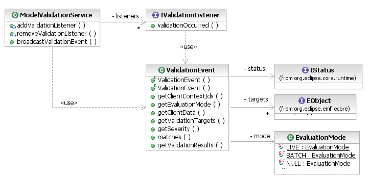

One kind of validation client is the one that performs validation operations via the ModelValidationService API. Another kind of client is the one that responds to validation operations by reporting problems to the user or by taking some other appropriate action. These are the validation listeners.
The same ModelValidationService that provides the invocation of validation operations also provides a listener API for clients to learn about validation that has occurred and the results generated. Listeners may be registered at run-time using the addValidationListener(IValidationListener) method. More commonly, however, they are registered statically on the org.eclipse.emf.validation.validationListeners extension point.

[as SVG]
A listener is registered on the extension point with an association to zero or more client contexts. This serves to filter out events for validation operations that are not of interest to the particular client application, that did not occur in its context.
<extension point="org.eclipse.emf.validation.validationListeners">
<listener class="org.eclipse.example.validation.ProblemsReporter">
<clientContext id="com.example.MyClientContext"/>
</listener>
</extension>
The ValidationEvent provides a good deal of information about the validation operation, including:
One of the validation listeners provided by the EMF Validation Framework, itself, is the internal LiveValidationListener class, which shows results from live validation operations in a dialog or a console (subject to the user's settings in the Model Validation preference page).
An application that wishes to have its live validation results shown in this dialog may simply register its Client context on the org.eclipse.emf.validation.UIRegisteredClientContext extension point.
<extension
point="org.eclipse.emf.validation.ui.UIRegisteredClientContext">
<clientContext id="org.eclipse.example.libraryContext"/>
</extension>
For a listener that wishes to report batch validation problems to the problems view, the framework provides a convenient utility class MarkerUtil that creates problem markers from the IStatus results of validation:
public class ProblemsReporter implements IValidationListener {
public void validationOccurred(ValidationEvent event) {
if (event.matches(IStatus.WARNING | IStatus.ERROR)) {
// fabricate a multi-status for the MarkerUtil to consume
List results = event.getValidationResults();
IConstraintStatus multi = new MultiStatus(
"org.eclipse.example.MyPlugin", 1,
(IStatus[]) results.toArray(new IStatus[results.size()]),
"Problems were found by validation", null);
try {
// create problem markers on the appropriate resources
MarkerUtil.createMarkers(multi);
} catch (CoreException e) {
// creation of problem markers failed for some reason
MyPlugin.getLog().log(e.getStatus());
}
}
}
}
By default, the markers are created using the org.eclipse.emf.validation.problem marker type that extends EMF core's org.eclipse.emf.ecore.diagnostic marker type. Clients can specify their own marker type, if they wish.
Copyright (c) 2000, 2007 IBM Corporation and others. All Rights Reserved.